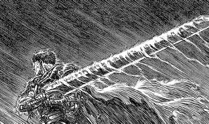

Berserk Mangá

Berserk é uma sombria e visceral epopeia de fantasia que segue a vida de Guts, um mercenário solitário e endurecido por uma infância traumática. A história atinge seu ápice emocional no arco da Era de Ouro, onde Guts encontra amizade e propósito ao se juntar à Banda do Falcão, liderada pelo carismático e ambicioso Griffith. No entanto, essa irmandade é destruída no evento apocalíptico conhecido como Eclipse, quando Griffith sacrifica seus companheiros aos demônios da Mão de Deus para realizar seu sonho de ter um reino, renascendo como o ser demoníaco Femto. Guts sobrevive ao massacre, mas fica amaldiçoado com a Marca do Sacrifício, que o obriga a lutar contra demônios todas as noites. Consumido pelo ódio, ele assume a identidade do Espadachim Negro, empunhando a colossal espada Matadora de Dragões e usando a autodestrutiva Armadura Berserker em uma busca incansável por vingança, enquanto tenta proteger e restaurar a sanidade de sua amada Casca. É uma narrativa profunda sobre trauma, destino e a resistência inquebrável do espírito humano contra forças divinas e malignas.
| Gênero | Dark Fantasy, Seinen, Ação e drama |
|---|---|
| Autor | Kentarō Miura |
| Editora | Hakusensha |
| Data de Lançamento | 26 de novembro de 1990 |